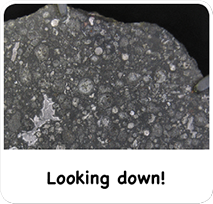
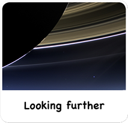
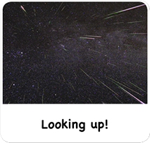

How do you find these small solar system bodies, orbiting between and beyond the planets?
How big a telescope and how many millions of dollars do you need?
The answers to these questions may surprise you!


